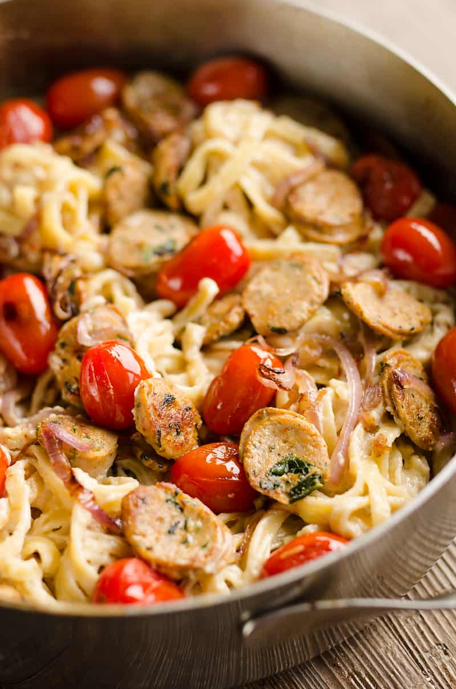

Sweet Apple Chicken Sausage Alfredo Pasta

NOTE: We are not making the alfredo sauce from scratch
Description
Let's make alfredo pasta with sweet apple chicken sausage!
This is Madison's favorite type of sausage and she
loves pasta.
Ingredients
- Alfredo sauce (pre-made)
- Pasta (Fettuccine, Farfalle, Rigatoni)
- Sweet apple chicken sausage
- 1 cup of Cherry tomatoes
- 1 cup of Spinach
- 1 cup of garlic
- 1 cup of purple onions
- 1 tbs of olive oil
- Salt and pepper
Steps
- Heat up a pot of water until it boils. Add salt
into the water. Then add the pasta.
- On a pan, heat 1 tsb of olive oil. Put the spinach and
cherry tomatoes in the pan. Once cooked, add in the garlic and onions.
- Slice the sausage and throw it into the pan. Once everything
is cooked, pour the alfredo sauce into the pan.
- After the pasta is cooked, drain the water and let the pasta sit.
- Throw the pasta into the sauce and mix thoroughly. Then enjoy!